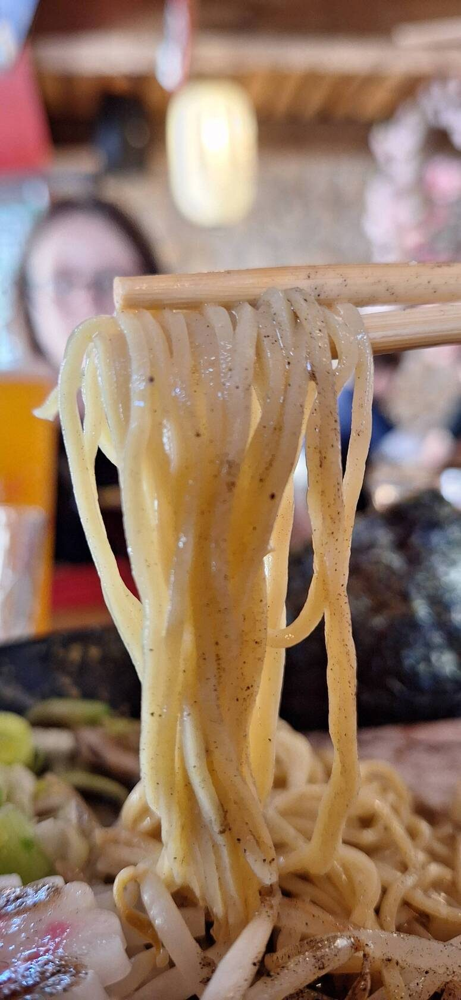
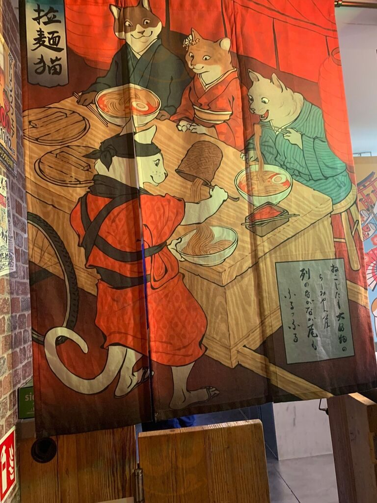
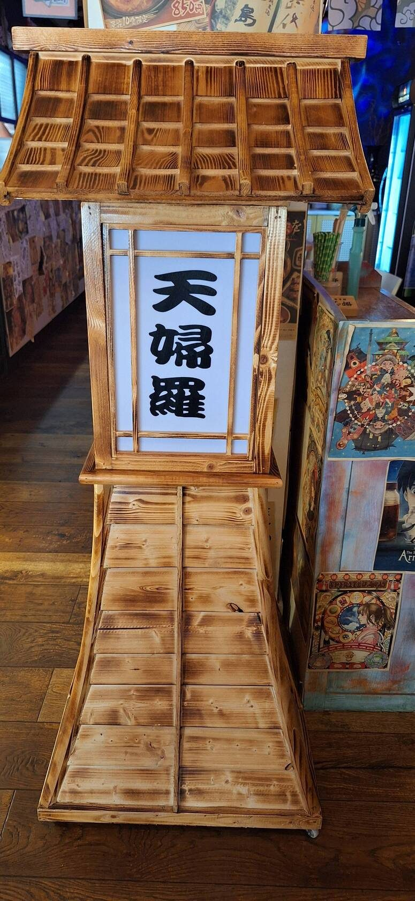
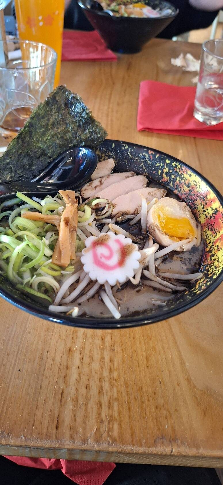
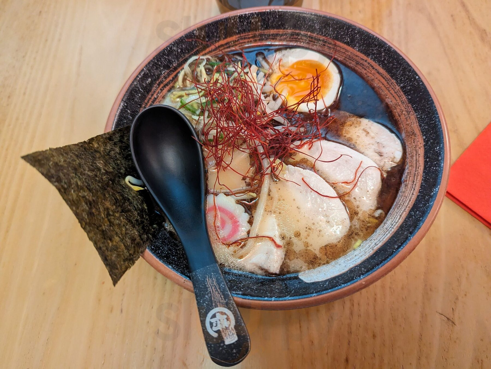
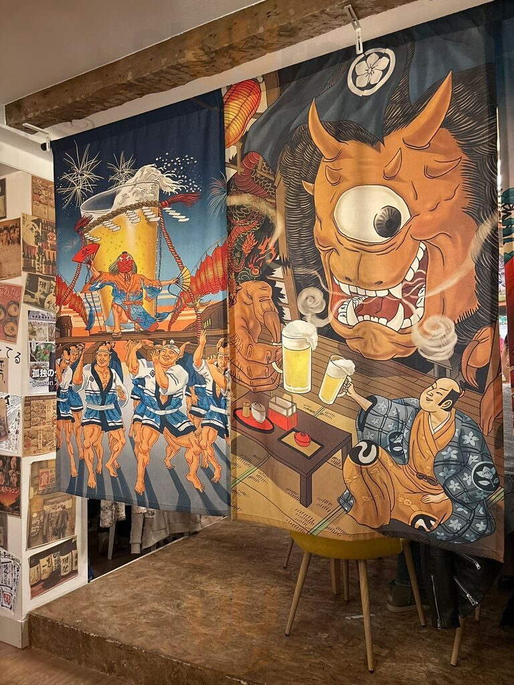
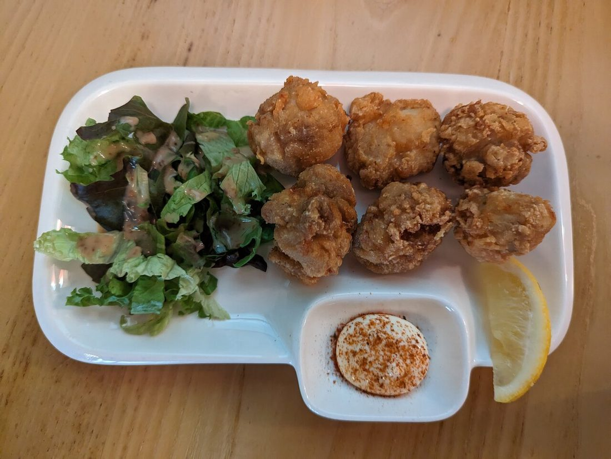
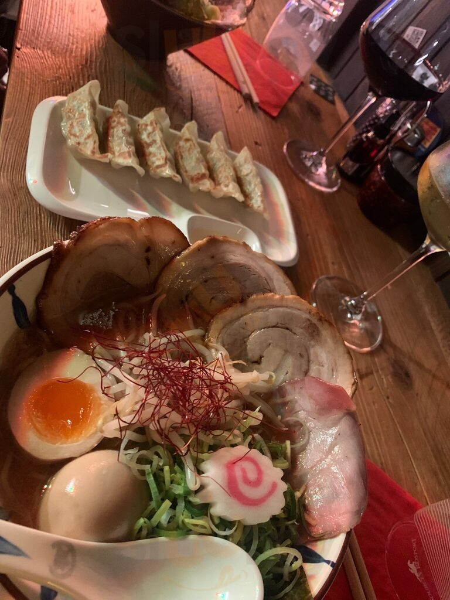
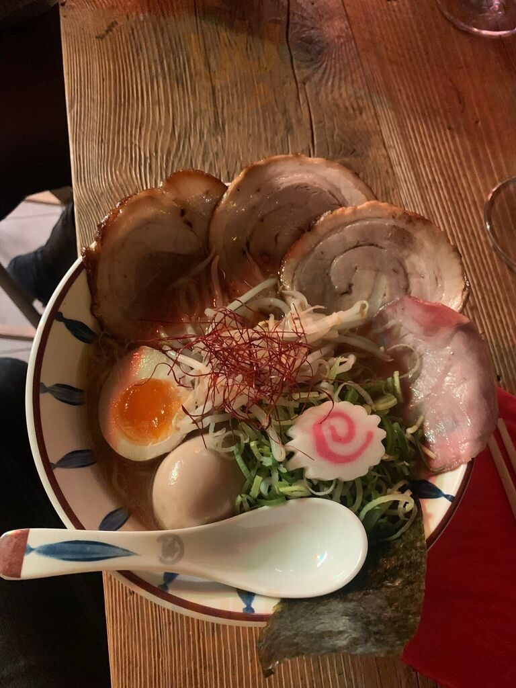

Le ramena un passeport.
Né à Tokyo. Servi à Luxembourg.
Des bouillons mijotés de longues heures, du chashu caramélisé à la main, des pousses de bambou maison. Le ramen d'une ruelle d'Osaka, dressé au cœur de la ville.




Dix ans à Tokyo, un bol à Luxembourg.
La cheffe Florence Chen a passé une dizaine d'années au Japon à apprendre le ramen dans les règles — bouillons lents, produits frais, rien de précipité. Elle a rapporté ce savoir-faire à Luxembourg, avec une idée simple : servir le ramen dont elle est tombée amoureuse dans les ruelles d'Osaka, exactement comme il doit être.
On pousse la porte et l'on est ailleurs : une ruelle japonaise reconstituée au rez-de-chaussée, lanternes et cagettes de marché ; une salle plus lumineuse à l'étage. Les bouillons mijotent des heures. Le chashu est caramélisé à la main. Les pousses de bambou sont faites maison.
Une ruelle de Tokyo, deux étages plus bas que la ville





Les bols & les petites faims
Le ramen au centre — quatre bouillons, plus les grands classiques d'une échoppe japonaise.
Ramen
Udon
À côté
Douceurs & boissons
Carte indicative, établie à partir de sources publiques — sélection non exhaustive, prix à confirmer avec la maison.
Passer la porte
Horaires
⚠ Horaires indicatifs — à confirmer avec la maison.